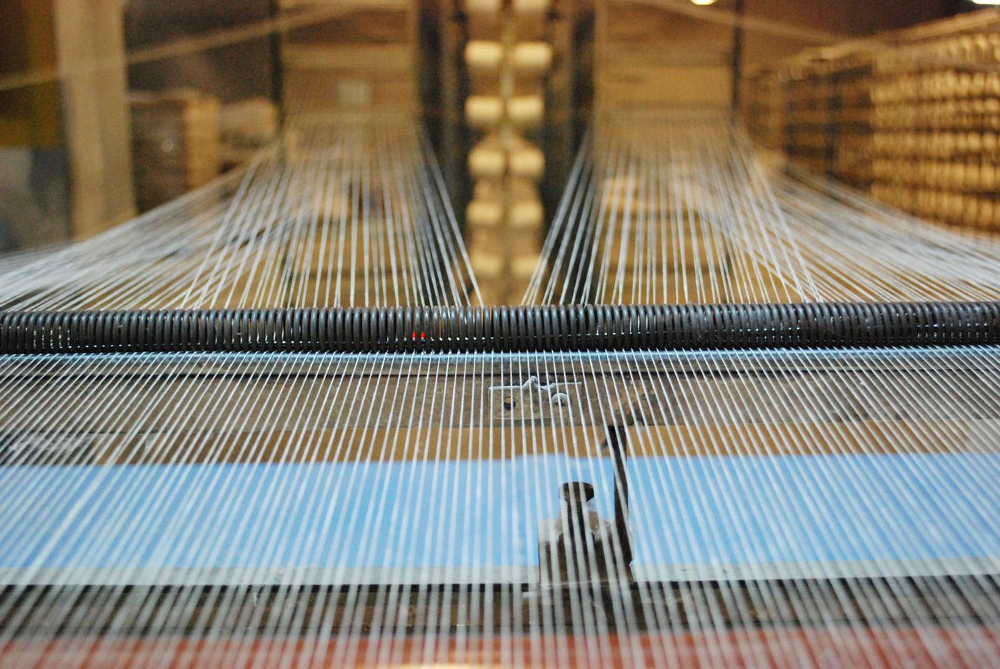
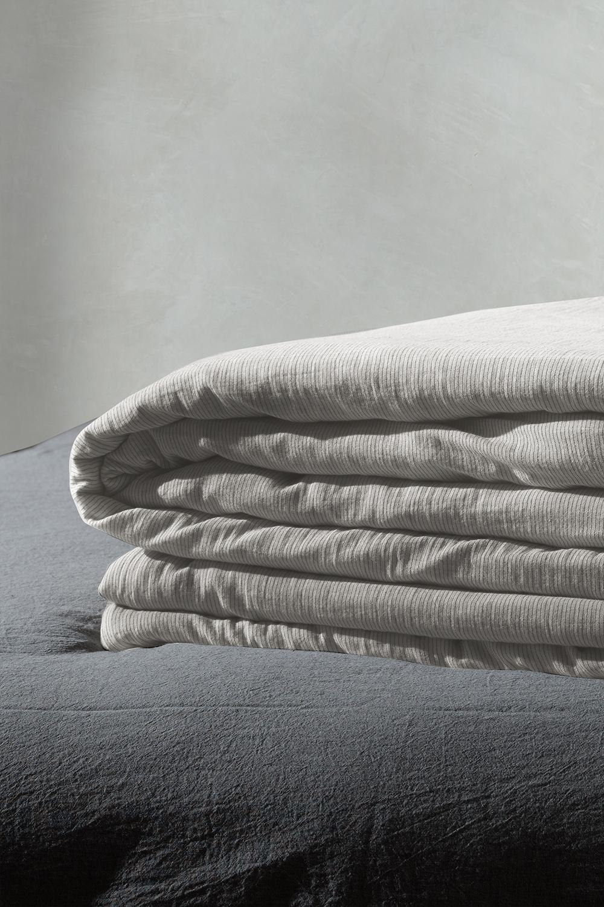
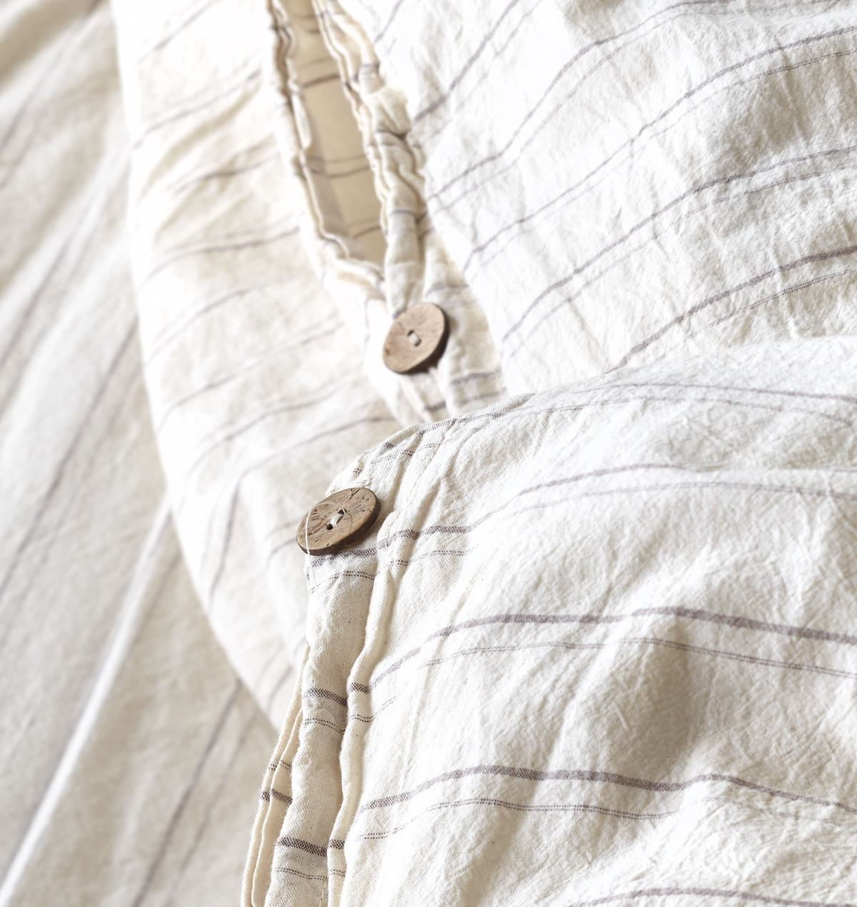
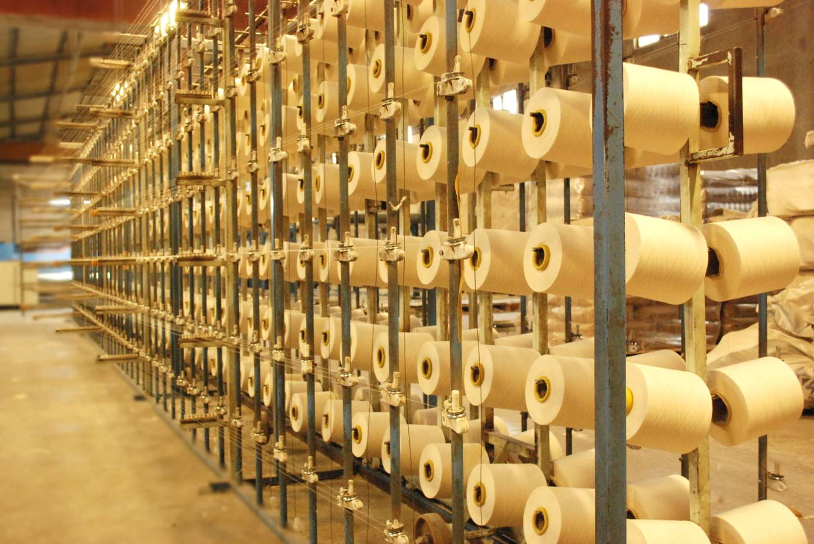
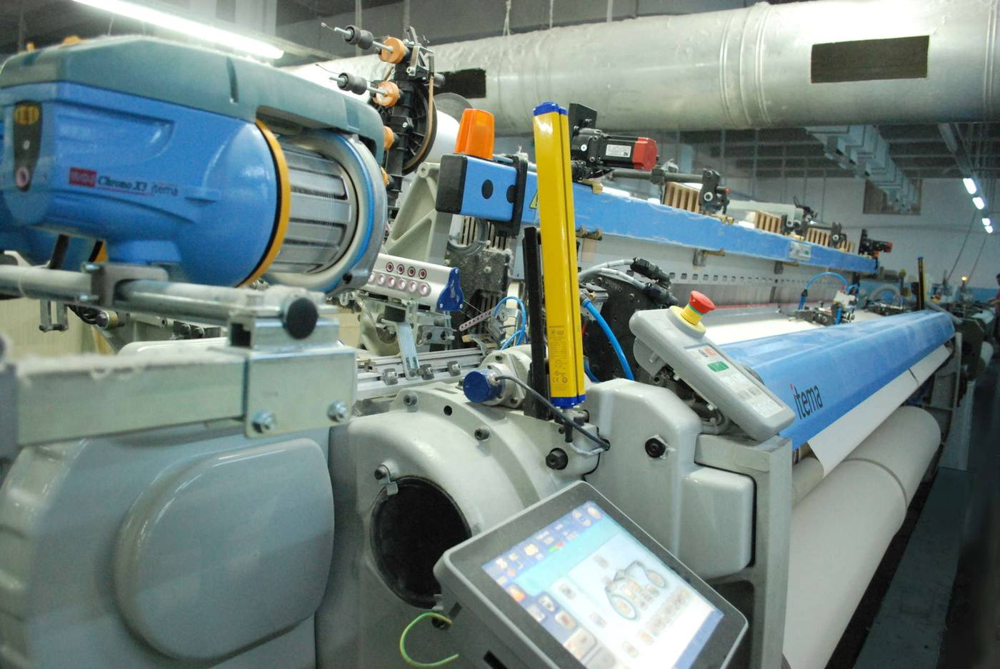

FS Dokuma Tekstil
FS Dokuma produces raw fabric, semi-finished fabric and ready-made home textile products for retailers, brands and manufacturers in Türkiye and abroad.
Products
What we produce
Raw fabrics
Greige woven fabric for manufacturers.
- Plain, ranforce, satin, muslin, gabardine, panama, yarn-dyed and custom constructions woven to your specification
- Cotton, linen, bamboo, polyester and blends
- Woven for home and hospital textiles
- Widths up to 360 cm reed width
- Supplied within Türkiye and for export
Processed fabrics
Finished fabric, ready for cutting and making up.
- Bleached
- Yarn-dyed
- Dyed (overflow / pad batch)
- Printed (reactive / pigment)
Ready-made products
Finished home textiles, made up and packed to your specification.
- Duvet covers, flat sheets and fitted sheets
- Pillowcases
- Muslin bed covers, bedspreads, throws and piques
- Tablecloths
Our own brand
Founded in 2020, our own brand Berolige offers yarn-dyed chambray duvet cover sets, muslin duvet cover sets and muslin bedspreads.
Visit beroligehome.com

About us
Three generations in Denizli textiles
FS Dokuma was founded in 2011 by the third generation of the Sayın family, which has been in the textile business since the 1960s.
We produce up to 200,000 metres a month, supplying fabric to manufacturers in Türkiye and abroad, and finished home textiles to online retailers and store chains across Europe. Today our goods ship to ten export markets: Bulgaria, Germany, Greece, Italy, the Netherlands, Romania, Russia, Slovenia, Ukraine and the United Kingdom.


From the FS Dokuma Ltd. archive.
Certifications
Certificates and scope documents available on request.
Contact
FS Dokuma Tekstil San. ve Tic. Ltd. Şti.
Saraylar Mah. 367. Sok. No:17
20100 Merkezefendi / Denizli, Türkiye